About SET(Sujnan Educational Trust)
Sujnan Educational Trust is run by Ramesh Shetty, Pratap Chandra Shetty and Bharath Shetty - the visionary leaders who want to transform the education in the rural Kundapura.
Sujnan Educational Trust contains Vidyaranya English Medium School and Sujnan Pre-University College
✔Right MISSION
Sujnan Educational Trust is commited to impart quality education and to provide co-curricular facilities for the all-round development of the youth
✔Right VISION
To be a leading educational institution that provides a transformative education to create leaders and innovators, and generates new knowledge for society
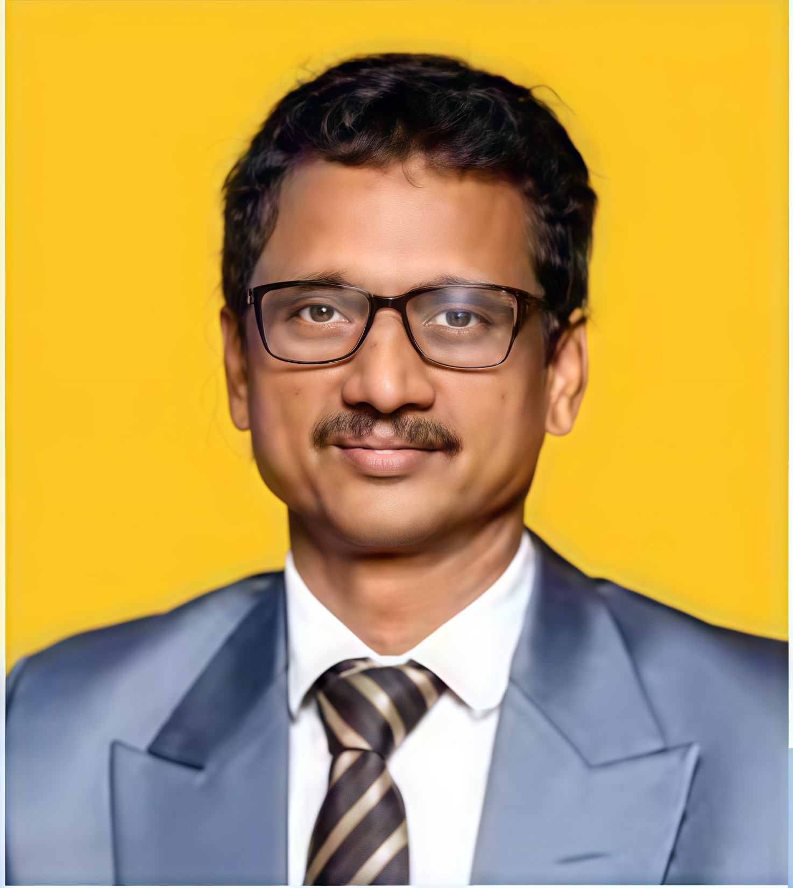
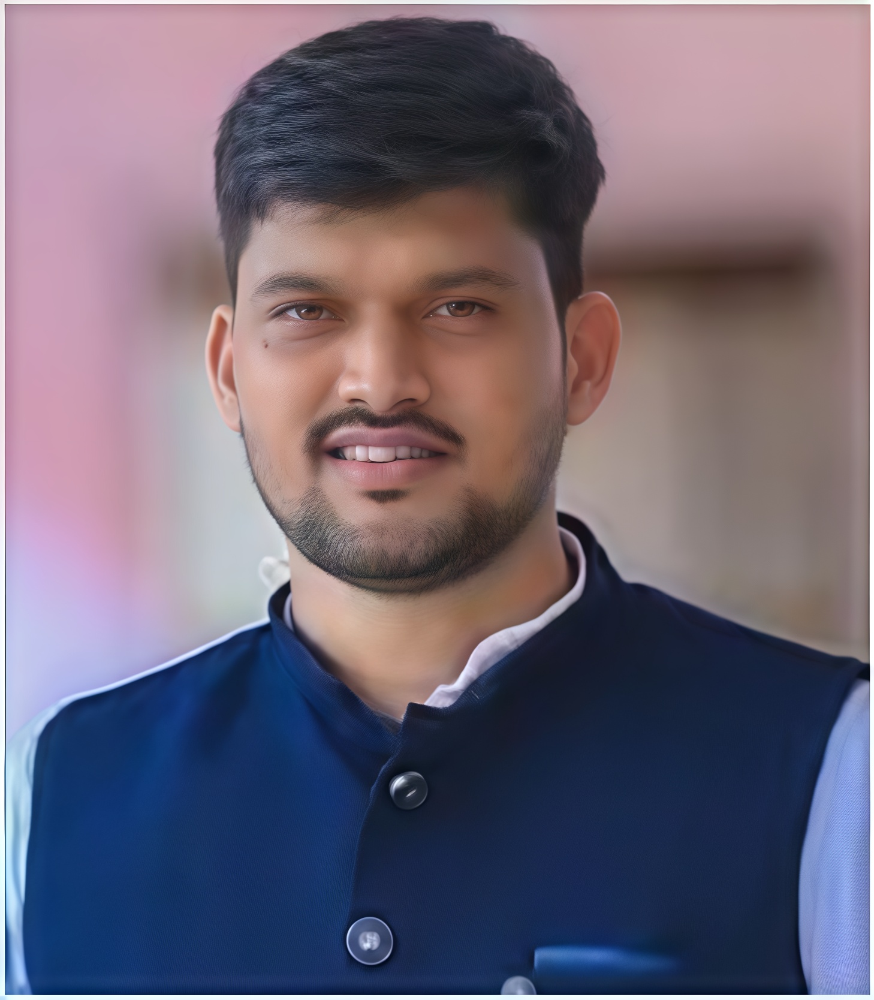
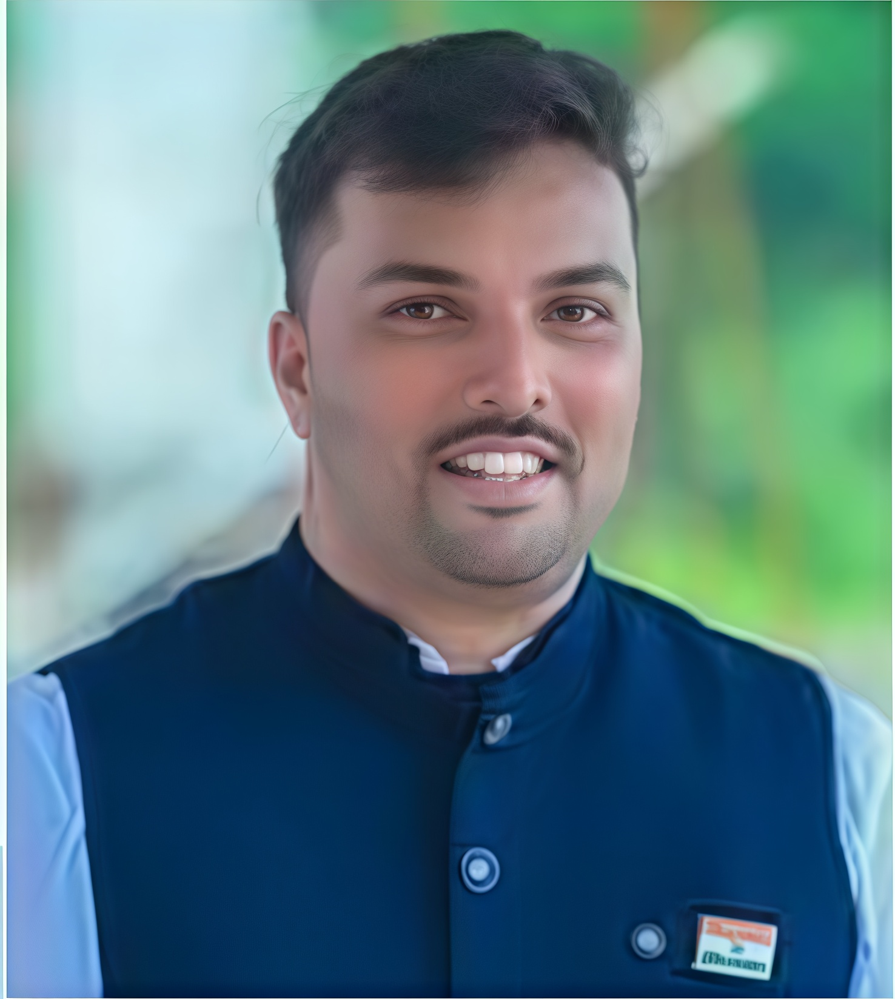
Chairman Message
Vision of Sujnan Educational Trust is based on hard work, open communication, a strong emphasis on teamwork and high level
of responsibilities. This visionary culture allows and emphasizes our wards not only to adapt the present day challenges but
also to acknowledge their individual responsibilities to the society and our nation at large. The physical, intellectual,
spiritual, social and psychological formation received in one's school/college speaks volumes about the individual and the
institution.
It has been observed that the majority of students who clear NTSE, NEET, JEE, KVPY, NDA, CA and CS are from North India as
they are given training to face these exams right from their primary education. This kind of training is lacking in
Karnataka, causing students to lag behind in these competitive exams here. With the dream of introducing qualitative training
to the students at the primary school level, we have introduced IIT/NEET foundation classes from 6th standard in our
institution. We have established Sujnan Pre-University College in the serene ambience of Yadadi-Mathyadi in Kundapura. Our
utmost focus lies in the holistic development of our students by giving importance to their talents in sports, art and culture,
along with education, and creating a sense of responsibility towards the community at large.
---- Dr Ramesh Shetty, Chairman Sujnan Educational Trust
Courses Offered
Science
- PCMB - Physics | Chemistry | Maths | Biology
- PCMCs - Physics | Chemistry | Maths | Computer Science
- Integrated PUC + KCET/NEET/JEE/NATA and NEET /CET crash course
- Vacation coaching classes
- NDA/NATA/JEE-ARCH coaching
- NEET long term course (Repeaters batch)
- IIT foundation classes (For High School students)
Commerce
- BASBM - Business Studies | Accountancy | Statistics | Basic Mathematics
- EABCs - Economics | Accountancy | Business Studies | Computer Science
- CA foundation for Chartered Accountant (CA) aspirants
- CS foundation for Company Secretary (CS) aspirants
- CLAT for Law aspirants
Languages - English | Sanskrit | Hindi | Kannada
Why Sujnan Educational Trust?
Weekly Competitive (JEE/NEET/CET) exam on every Monday for evaluating previous week's topics
and resolving doubts on the same afternoon
Study hours after college gives students time to resolve the doubts and revise today's topics,
helping to learn without any distractions
Top tier faculties from all over India with years of experience in competitive exams.
Lecturers stay in hostel to solve student's doubts any time
Lecturers stay in hostel to solve student's doubts any time
Celebration of festival on campus to make students feel the campus as home and not miss
their family
Dedicated software and app where you can see the performance of your child in every exam,
protected through unique password for every child
Integrated system of teaching where board and competitive syllabus are taught simultaneously
providing extra support for students
Security personnel for the institution in the entry.
Campus is fully equipped with CCTV cameras
Campus is fully equipped with CCTV cameras
Separate hostel facilities for boys and girls in the campus.
Phone booth to talk with only parents' numbers and fixed time for communication
Phone booth to talk with only parents' numbers and fixed time for communication
On-site health clinic in the campus with medical professionals for 24/7.
Dedicated wardens for every floor in the hostel to ensure safety of students
Dedicated wardens for every floor in the hostel to ensure safety of students
Laundry services, housekeeping for hostel students.
Evening snacks and dining facilities with nutritious food for hostelites
Evening snacks and dining facilities with nutritious food for hostelites
In just 2 years of operation, we produced...
0
Happy Students
0
IIT Students, which is one of the highest in whole Karnataka
0
Medical Students
We In News
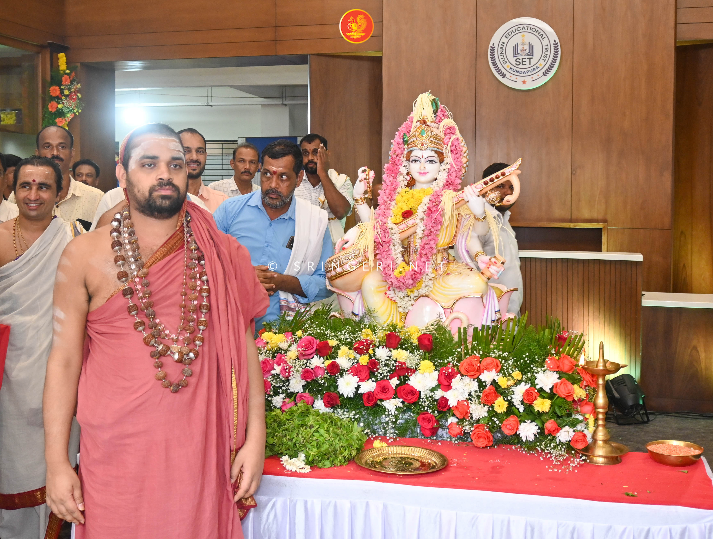
Jagadguru Sri Sannidhanam inaugurated the Vani Vilas men’s hostel and established Sri Saraswati Vigraha
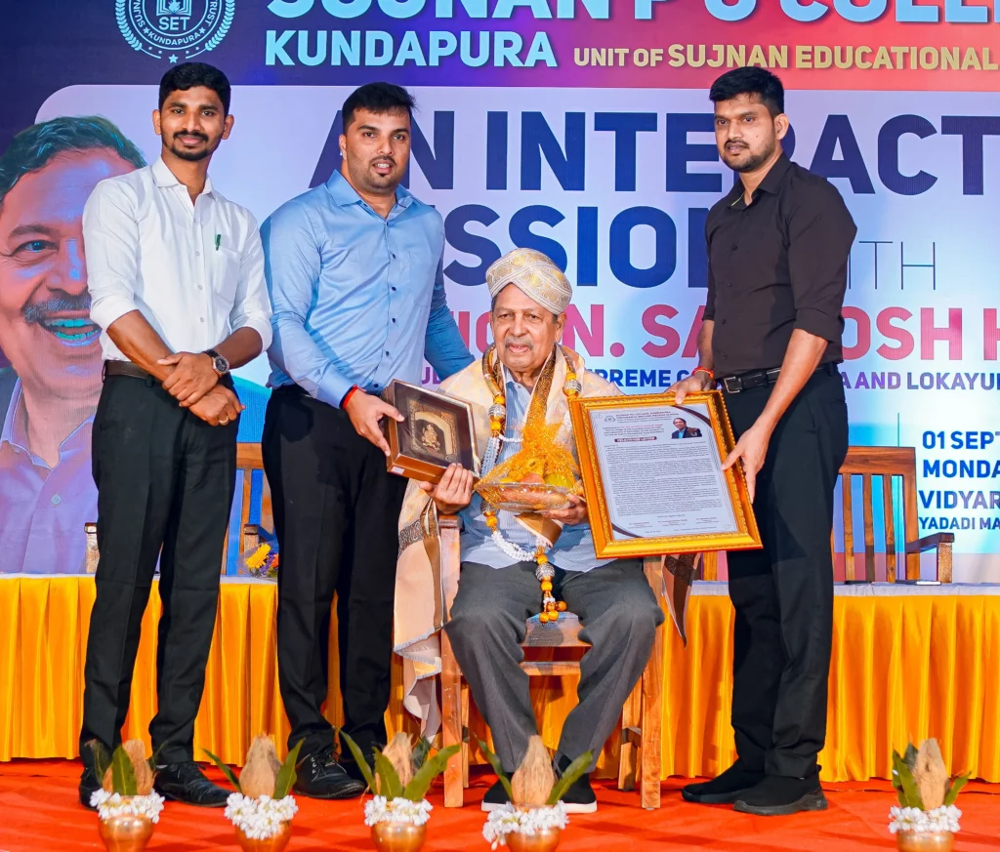
Former Supreme Court judge Justice Santhosh Hegde spoke about corruption in the country
and gave social values to students
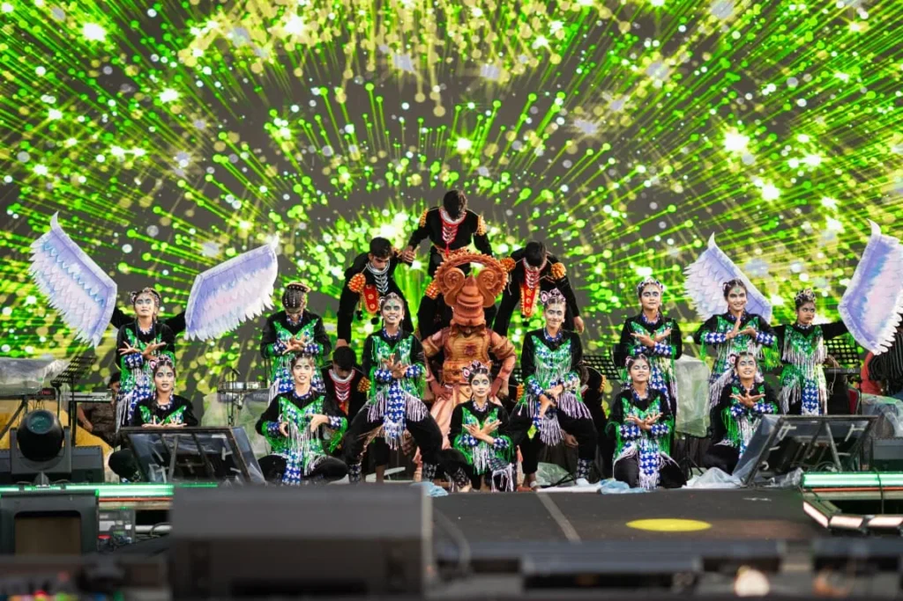
Our Sujnan college was selected in top 8 college out of 700 colleges in Karnataka in "Yuva Dasara" conducted in Mysore
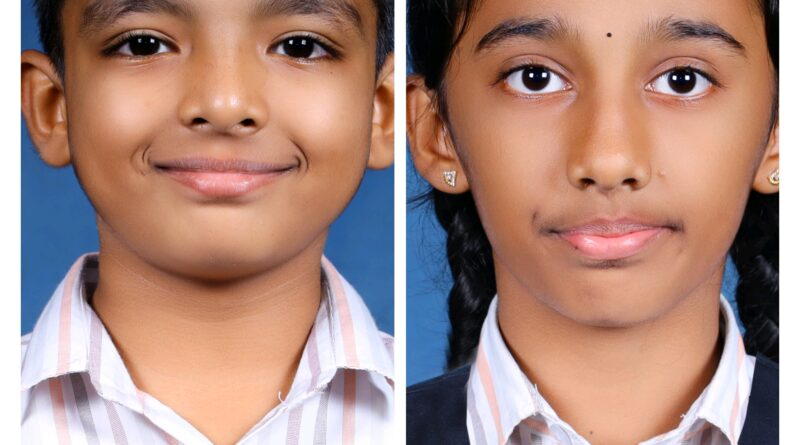
Advik Shetty and Drisha Shetty acheived first place in Abacus competition conducted Alvas PU College
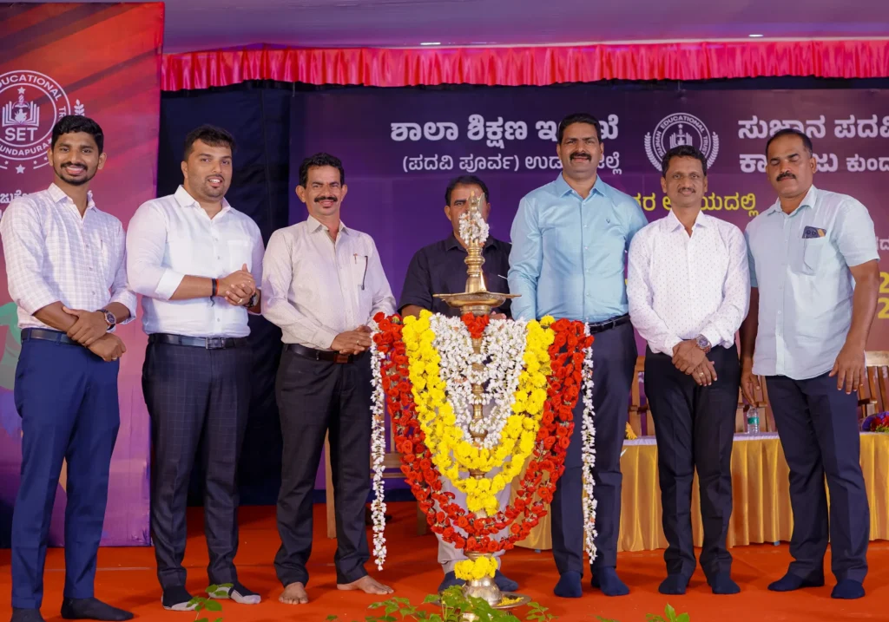
Sujnan PU college hosted Taluk level Kabaddi tournament with the collaboration of education department
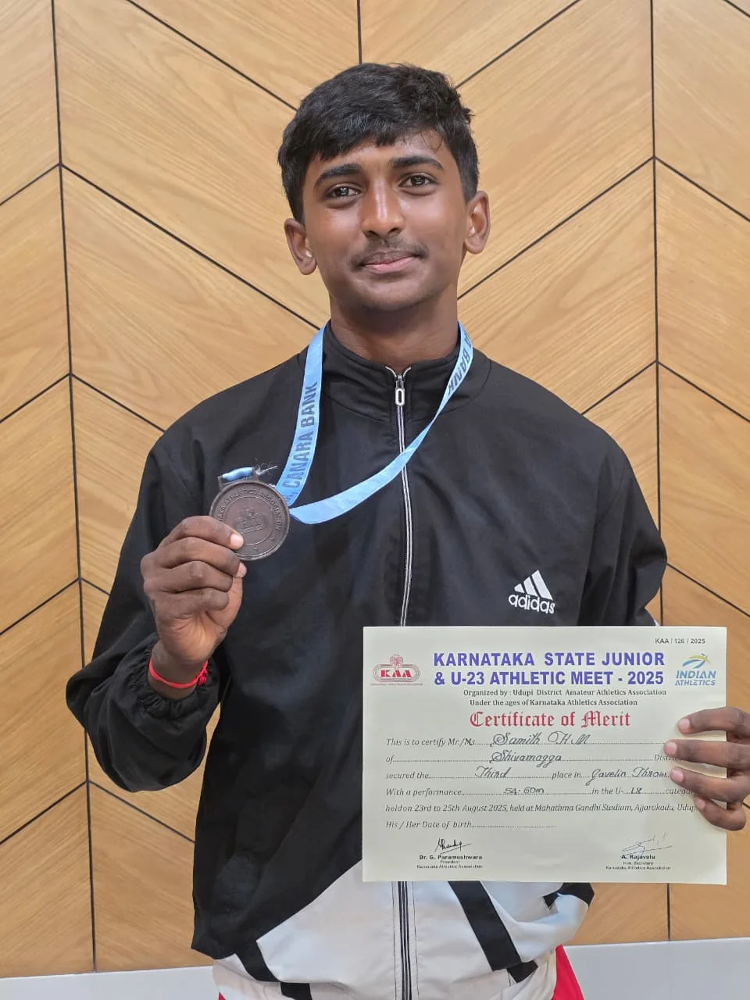
Samith secured 3rd rank in state level javelin throw competition conducted by Amateur Athletic Association Udupi
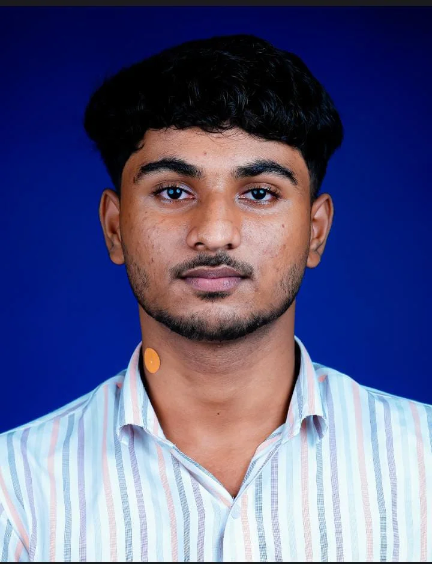
Mozam, Sujnan PU college student selected for state-level Karate competition conducted in PoornaPrajna college
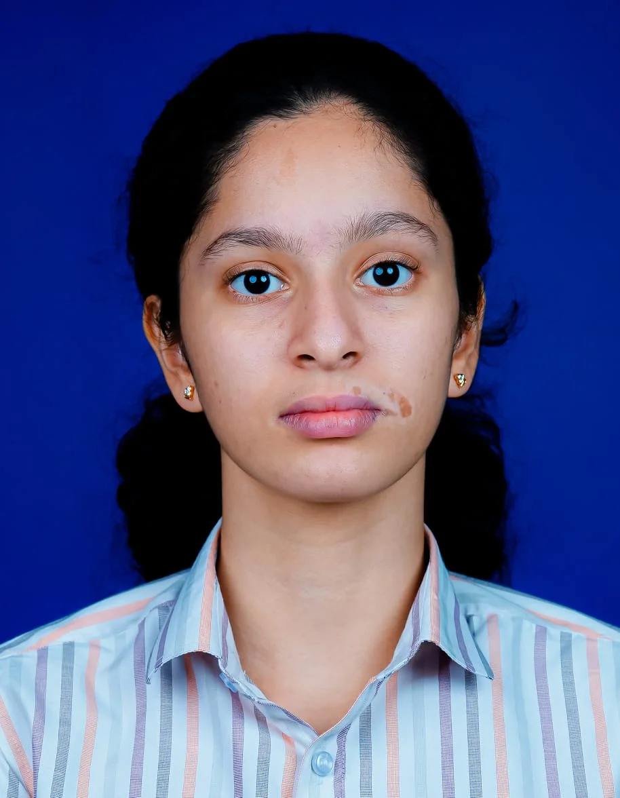
Sachi Shetty selected for state-level badminton competition conducted by education department
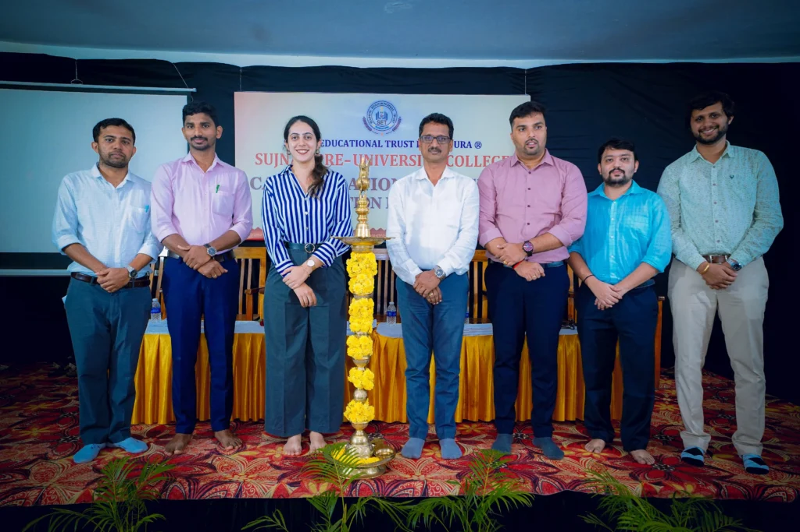
CA-CS foundation orientation program conducted by CA Deepika Vasani for commerce students
Contact
College code : SU0360
Call : 9964291755, 8217527362, 9845925983
Email : sujnanpucollege360@gmail.com
Location of Sujnan Campus: